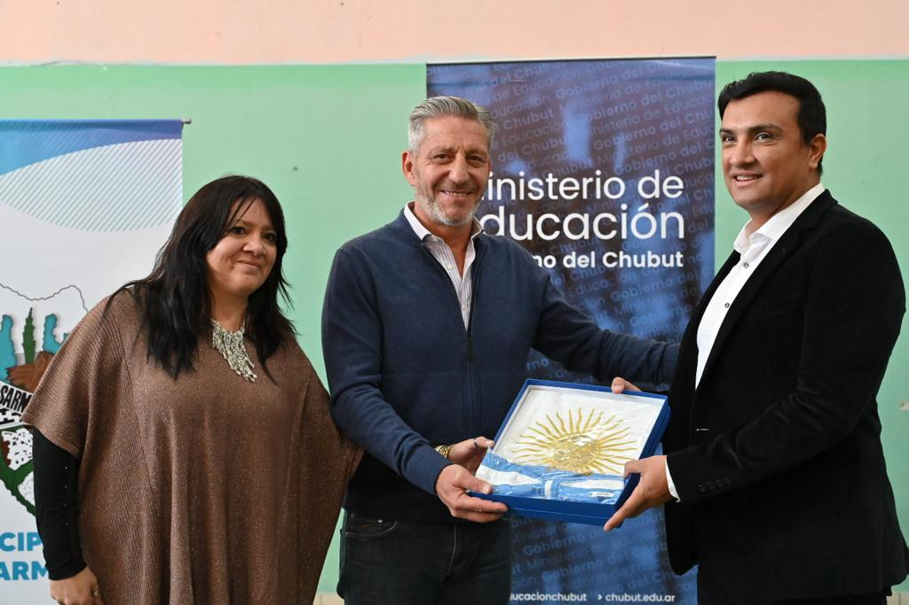
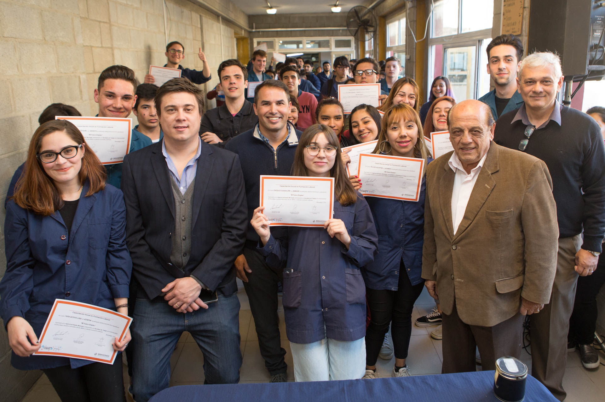
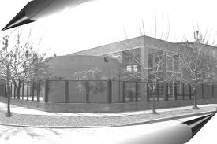
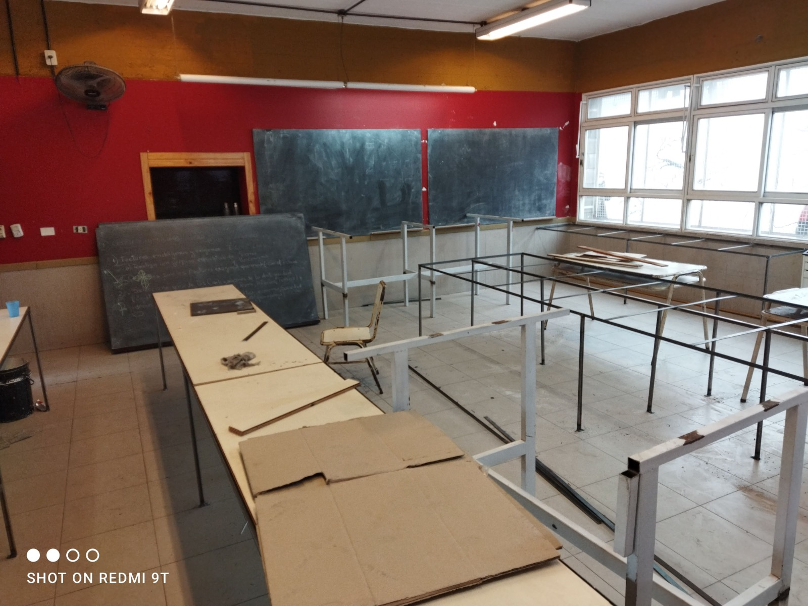
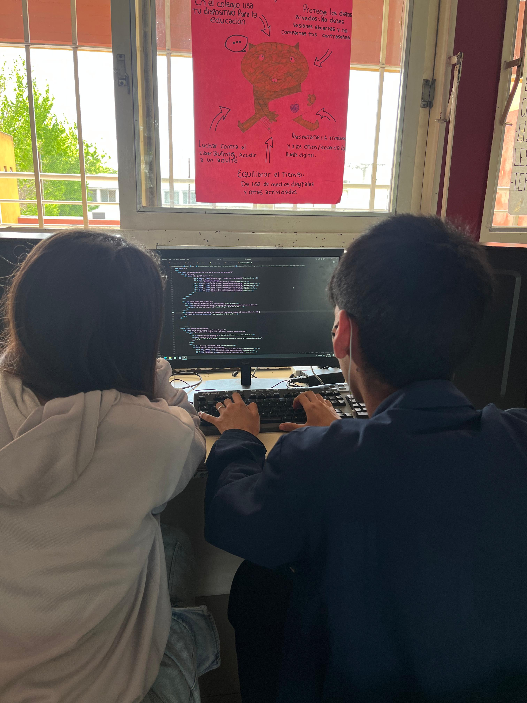
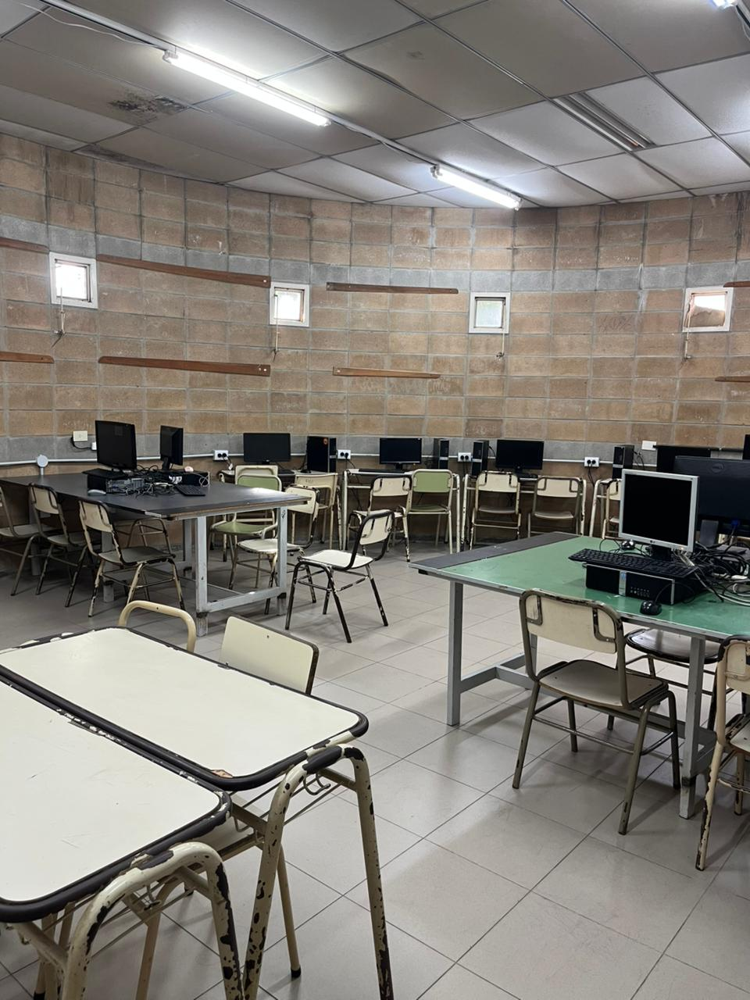
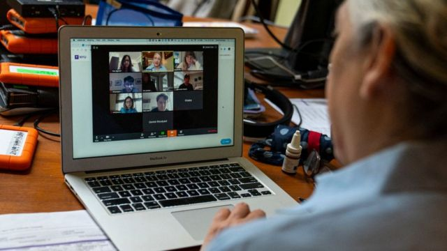
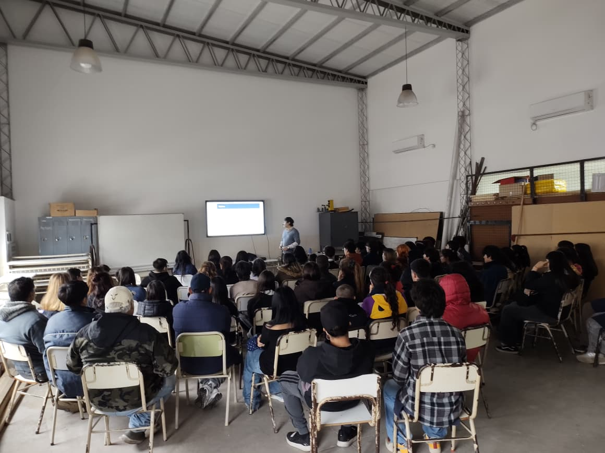

-
 1991
1991
Los Inicios
La escuela abrió sus puertas en el barrio "El Vidrio", funcionando en el turno noche dentro de las instalaciones de la Escuela Primaria N°30. En sus primeros años otorgaba el título de Bachiller en Computación.
-

1995Primera Especialización
La comunidad educativa consiguió la aprobación oficial de la especialidad Técnico en Computación (Resolución Ministerial N°2357/95), un paso clave en la formación técnica especializada de la institución.
-

1998Primera Promoción
Egresó la primera camada de Técnicos en Computación, confirmando el rumbo de la propuesta educativa y abriendo el camino para las generaciones que vinieron después.
-

2001Edificio Propio
Se inaugura el edificio propio en 111 y 19, Barrio Primavera de Berazategui: 10 aulas, 4 laboratorios especializados, biblioteca y todo lo necesario para una educación técnica de calidad.
-

2005Transformación en Escuela Técnica
Con la Resolución Ministerial N°6525/05 la institución adopta su nueva denominación como Escuela Técnica, sumando el Ciclo Superior y consolidando su identidad como escuela técnica.
-

2010Expansión de Especialidades
Se incorpora la especialidad Técnico en Programación, ampliando las opciones educativas y respondiendo a las nuevas demandas del mercado laboral tecnológico.
-

2015Modernización de Laboratorios
Se renuevan por completo los laboratorios de informática con equipamiento de última generación, mejorando notablemente las condiciones de aprendizaje de los estudiantes.
-

2020Adaptación Digital
Durante la pandemia la escuela implementó con éxito la modalidad virtual, demostrando su capacidad de adaptación y sosteniendo la calidad educativa en un contexto desafiante.
-

2026Futuro y Proyección
Seguimos innovando en educación técnica, preparando a nuestros estudiantes para los desafíos del futuro digital y sosteniendo el compromiso con la excelencia educativa.